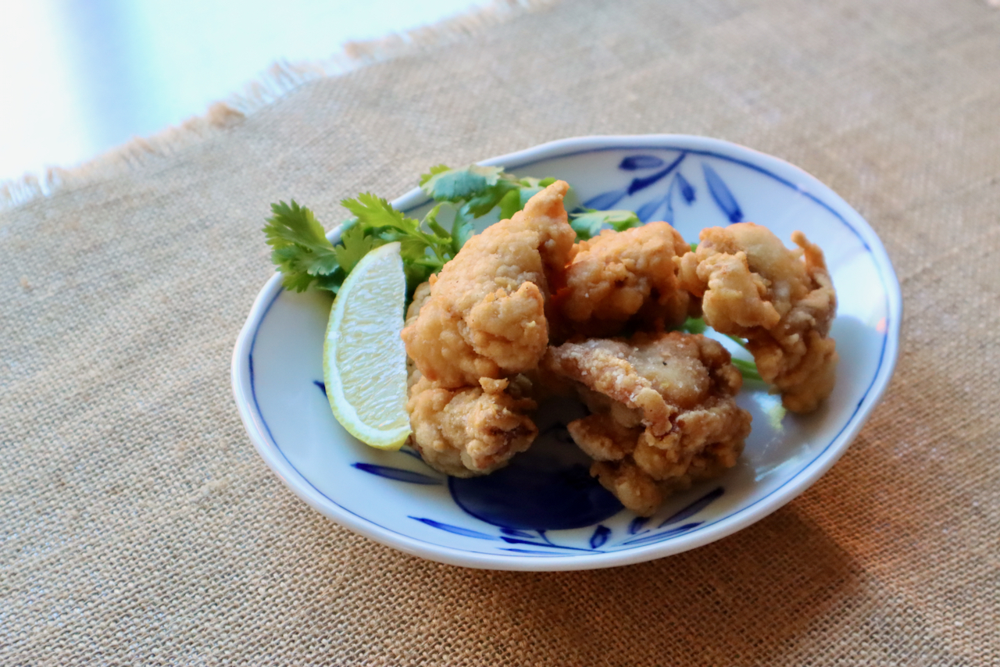

Chicken Karaage

Karaage (唐揚げ) is Japanese-style fried chicken (two words: kara age). It is a great appetizer to go with drinks, a kid (and adult) friendly dinner entree, and also a perfect item for a Bento lunch box.
Japanese Karaage is usually seasoned with garlic and ginger along with soy sauce, coated lightly with flour, and deep fried. Because it’s fried in oil, Karaage may not be the healthiest Japanese food, but it’s certainly a very popular dish in Japan.
Ingredients
- 4 chicken thighs
- 2 Tbsp Sake
- 1 Tbsp Soy Sauce
- 1/2 tsp salt
- 1-2 tsp garlic grated
- 1-2 tsp ginger root grated
- 1/2 cup all purpose flour
- 1/2 cup Katakuriko potato starch or corn starch
- oil for deep frying
Instructions
- Cut each chicken thigh into 3-4 pieces. In a medium size bowl, mix Sake, Soy Sauce, salt, garlic and ginger with chicken. Let it sit for 1/2-1 hour.
- Mix flour and corn starch in another bowl. Coat marinated chicken pieces with flour mixture.
- Heat oil at medium high heat (350F). Deep-fry chicken for 6-8 minutes or until it's cooked through.